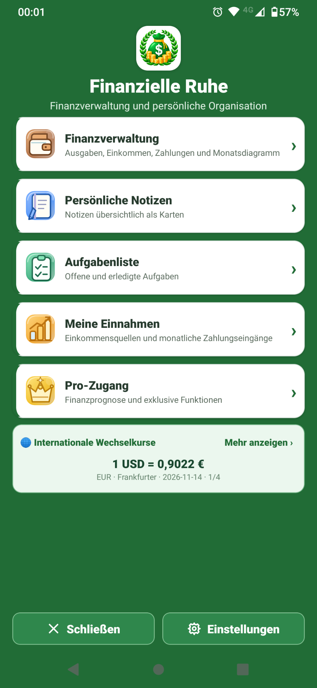

Finanzen verwalten
Erfassen Sie Ausgaben, Gehalt, zusätzliche Einnahmen, Rechnungen, Abonnements und wiederkehrende Einträge.
Finanzielle Ruhe · Finanzverwaltung und persönliche Organisation
Finanzielle Ruhe, früher bekannt als MyMoney, MeuDinheiro und MiDinero, verbindet persönliche Finanzen, Aufgaben, Notizen und Erinnerungen in einer Android-App.
Finanzielle Ruhe ist eine Android-App für Ausgabenkontrolle, Einnahmenverwaltung, Aufgaben, Notizen und Erinnerungen.
Finanzverwaltung und persönliche Organisation
Erfassen Sie Ausgaben, Gehalt, zusätzliche Einnahmen, Rechnungen, Abonnements und wiederkehrende Einträge.
Erstellen Sie Aufgaben, Erinnerungen und persönliche Notizen in Text oder Sprache.
Nutzen Sie Diagramme, Finanzkalender und wichtige Monatsindikatoren.
Schützen Sie Daten mit einer 8- bis 16-stelligen PIN und lokaler Verschlüsselung.
Diese realen Screenshots zeigen die deutsche Oberfläche klar, sachlich und ohne unnötige Überladung.


Sehen Sie das offizielle Video auf Deutsch oder öffnen Sie die komplette Playlist mit allen Sprachen.
Die wichtigsten Funktionen für Finanzen, Aufgaben und Notizen arbeiten lokal. Einige externe Dienste benötigen Internet.
Ja. Die App wurde umbenannt und nutzt weiterhin dasselbe Android-Paket: com.anspro.mymoney.app.
Im Footer finden Sie den Link zur ausführlichen englischen Datenschutzrichtlinie.
Finanzielle Ruhe ist eine Android-App für persönliche Finanzen und Alltagsorganisation. Paket: com.anspro.mymoney.app · Kontakt: moneyproapp@gmail.com
Finanzielle Ruhe ist auf Portugiesisch, Englisch, Spanisch, Französisch, Deutsch, Italienisch und Indonesisch verfügbar.